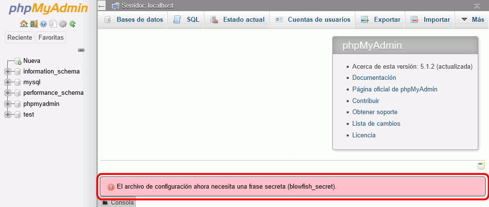

En esta lección se proponen ejercicios "avanzados" de administración de phpMyAdmin. Se pueden consultar las soluciones de estos ejercicios de phpMyAdmin, aunque se recomienda intentar realizarlos primero sin recurrir a estas soluciones.
Esta lección está pendiente de actualizar para phpMyAdmin 4.8.
phpMyAdmin (3) 1 - Completar instalación
Elimine el aviso inicial que muestra phpMyAdmin.

phpMyAdmin (3) 2 - Instalar tema
Notas:
Actualmente (noviembre de 2014) la página de descarga de temas de phpMyAdmin no parece funcionar correctamente. Los temas se pueden descargar de la página web de phpMyAdmin en SourceForge.
Aplique el tema Original:
Descargue el tema Cleanstrap (u otro tema disponible para la versión instalada) de la página de phpMyAdmin en SourceForge y descomprímalo en la carpeta adecuada.
Descargue la versión cleanstrap 1.0, publicada el 4 de diciembre de 2012. Se recomienda esa versión ya que estos ejercicios se han preparado para ella.
Si la versión cleanstrap 1.0 ya no está disponible en la web del programa, puede descargarla desde la página de Descarga de aplicaciones.
Aplique el tema Cleanstrap:
Vuelva al tema predeterminado pmahomme.
phpMyAdmin (3) 3 - Permitir borrar bases de datos a los usuarios
Como usuario root, compruebe que podría borrar bases de datos (no hace falta hacerlo).
Como usuario iaw_agenda_2, compruebe que no puede borrar sus bases de datos.
Con la configuración inicial, los usuarios no pueden borrar bases de datos, pero añadiendo la línea
en el archivo config.inc.php, el usuario podrá borrar bases de datos.
Como usuario iaw_agenda_2, compruebe que ya puede borrar sus bases de datos.
Deje el archivo de configuración de manera que los usuarios puedan borrar sus bases de datos, para poder hacer el ejercicio siguiente.
phpMyAdmin (3) 4 - Realizar copias de seguridad de las bases de datos del usuario iaw_agenda_2
Compruebe que hay registros guardados en las tablas tabla_1 y tabla_2.
Copia de seguridad rápida
Realice copias de seguridad rápidas de las tablas del usuario iaw_agenda_2
Borre las tablas de ambas aplicaciones.
Restaure las copias de seguridad realizadas.
Compruebe que los registros de las tablas se han recuperado correctamente.
Copia de seguridad personalizada
Realice copias de seguridad personalizadas de las bases de datos del usuario iaw_agenda_2 (incluyendo la creación de las bases de datos en la copia de seguridad).
Borre las bases de datos de ambas aplicaciones.
Restaure las copias de seguridad realizadas.
Compruebe que los registros de las tablas se han recuperado correctamente.
phpMyAdmin (3) 5 (optativo) - Generar PDFs de la estructura de las bases de datos
phpMyAdmin puede crear gráficos en formato pdf de la estructura de las bases de datos, pero no lo hace de forma predeterminada.

{kind=link}